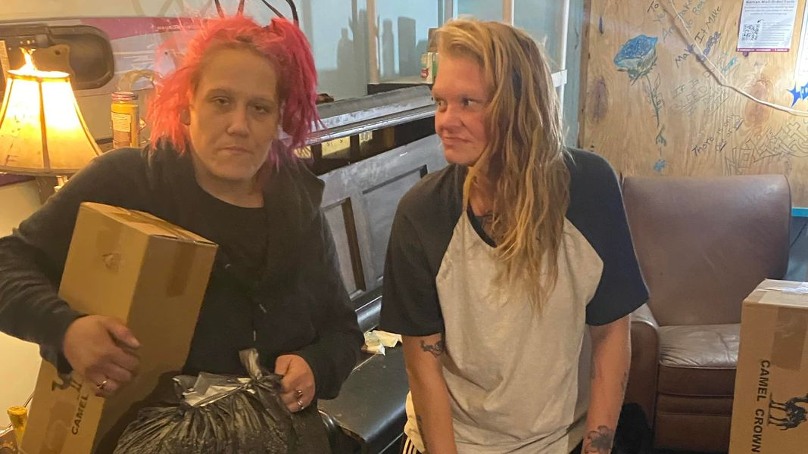

Mobile uploads
The person on the left here is Kristyn.
I’ve taken many women to the hospital after they have been beaten by their boyfriend. But in all the years doing this work, I have never seen anyone so brutally, abused and pummeled as Kristyn was a few weeks ago.
I have the picture of her as I drove her to the hospital. But it is so unbelievably gruesome, I can’t in good conscience show it to you.
She has undergone surgery to repair her lip that was ripped wide open all the way to her nose. He beat her face so badly that he knocked out eight of her teeth. Her jaw is broken and they want her to go in for another surgery to repair it.
She doesn’t want to go for the surgery because her jaw hurts so badly because of the injury and having to live in the icy cold in a tent. But she cannot open her mouth very wide and so I am trying to convince her to go do the surgery. We’ll see what happens. 
This man comes around, like a predatorial animal, circling her tent that she lives in with no protection. I cannot imagine the psychological terror she must be facing these nights, all alone in a fabric tent, completely unprotected.
I bring this up to draw attention to the atrocity that is Akron Ohio homelessness for the new @[100064805494040:2048:City of Akron, Ohio - Mayor's Office]
She desperately wants to get into the battered women shelter. But they are full and there are four women ahead of her who spent a week or more in the hospital. Kristyn only spent two days in the hospital.
This can’t be all that Akron can do for women like Kristyn.
I am beginning the process of looking at the potential of opening a shelter for homeless people. That is going to be years in the making. We need something for people like Kristyn right now. It can’t be acceptable that the only solution we have for her is a tent in the woods that she is illegally sleeping in.
If there was a devastating tornado in Akron, we would move heaven and earth to give people shelter in places that are not fit for human habitation. Kristyn had her own personal devastating tornado. Why is her situation different?
What I would like to do is give people like Kristyn, who are in extreme jeopardy a tiny house in an enclosed and secure space. My goal is to start very small so that we can carefully monitor and test the model. These would only be used to transition people into other shelters or housing. In order to stay in the tiny house, you would have to actively show that you are moving forward in your housing process.
I deeply hope that the new Akron City mayoral administration will be open to the idea of new and innovative homeless strategies.